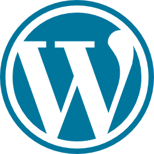
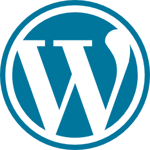

Hallo! Ik ben Ana
Graag wil ik mezelf voorstellen als een gepassioneerde professional op het gebied van ontwerp en gebruikerservaring. Met een sterke achtergrond in UI/UX design en frontend ontwikkeling, heb ik ervaring in het leveren van hoogwaardige oplossingen die de gebruikerservaring verbeteren en de merkidentiteit versterken. Ik hecht veel waarde aan samenwerking en ben altijd op zoek naar nieuwe uitdagingen om mijn vaardigheden verder te ontwikkelen en waarde toe te voegen aan projecten. Ik geloof dat een succesvol ontwerp zowel de behoeften van de gebruikers als de doelstellingen van het bedrijf in evenwicht houdt, en ik streef ernaar om dit evenwicht te bereiken in al mijn werk. Ik kijk ernaar uit om mijn passie voor design te delen en samen te werken aan inspirerende projecten.
Niet alleen ben ik gepassioneerd door ontwerp en gebruikerservaring, maar mijn achtergrond draagt ook bij aan mijn unieke perspectief. Ik ben oorspronkelijk afkomstig uit Peru en heb enige tijd in Spanje gewoond voordat ik bijna vijf jaar geleden naar Belgie ben verhuisd. Samen met mijn partner en onze dochter geniet ik van het leven hier en heb ik de kans gehad om me te omringen met diverse culturen en ideeën. Deze internationale ervaring heeft mijn creative visie verrijt en me geholpen om een breder begrip te krijgen van verschillende esthetiek en designprincipes. Ik ben dankbaar voor de kansen die ik heb gehad om te groeien en te leren in verschillende omgevinden, en ik ben heel enthousiast om mijn unieke perspectief toe te passen op mijn ontwerpwerk.
Natuurlijk! Hier zijn enkele voorbeelden van mijn hard skills:

UX/UI Design
UI/UX-design: Ik heb ervaring met het creëren van intuïtieve gebruikersinterfaces en het ontwerpen van boeiende gebruikerservaringen. Ik ben bekend met tools zoals Adobe XD, Sketch en Figma om wireframes, prototypes en visuele ontwerpen te maken.

Front-End Web Development
Ik ben bedreven in het omzetten van ontwerpen naar goed gestructureerde en responsieve frontend-code. Mijn vaardigheden omvatten HTML, CSS en JavaScript. Daarnaast ben ik voortdurend bezig met het uitbreiden van mijn technische kennis en ben ik bezig met het leren van aanvullende tools en frameworks, waaronder PHP, Sass, Vue.js, WordPress en Craft CMS.

Grafisch ontwerp en illustratie
Ik ben bekwaam in het gebruik van grafische ontwerptools zoals Adobe Photoshop, Illustrator en InDesign. Ik kan aantrekkelijke visuals, iconen en illustraties creëren die consistent zijn met de merkidentiteit.
Prototyping en interactieontwerp
Ik heb ervaring met het maken van interactieve prototypes om gebruikerservaring te testen en te optimaliseren. Ik maak gebruik van tools zoals InVision, Adobe XD om een realistische gebruikservaring te stimuleren.
Branding en visueel identiteitsontwerp:
Ik ben in staat om sterke merkidentiteiten te ontwikkelen, inclusief logo-ontwerp, kleurenpaletten en typografie. Ik kan een consistente visuele uitstraling creëren die de waarden en boodschap van een merk weerspiegelt.
.png)
Usability Testing en User Research
Ik heb ervaring met het uitvoeren van usability tests en het uitvoeren van gebruikersonderzoek. Ik kan inzichten verzamelen over het gedrag en de behoeften van gebruikers, en deze gebruiken om ontwerpen te optimaliseren voor een betere gebruikerservaring.
Deze hard skills stellen me in staat om een breed scala aan projecten aan te pakken en waarde toe te voegen aan het ontwerpproces. Ik ben altijd bereid om nieuwe vaardigheden te leren en mijn kennis up-to-date te houden in een snel veranderende technologische omgeving.
Hier is een lijst van tools die ik regelmatig gebruik:
Dit is een overzicht van de tools die ik momenteel gebruik om mijn werk efficiënt uit te voeren. Ik ben ook altijd bereid om nieuwe tools en technologieën te verkennen en te leren, omdat ik geloof in voortdurende groei en het streven naar de beste oplossingen voor mijn projecten.


 


.png)


in het leerproces
Momenteel ben ik bezig met het leren van PHP voor backend-ontwikkeling, Sass voor geavanceerdere CSS-styling, Vue.js voor het bouwen van interactieve gebruikersinterfaces, WordPress voor contentbeheersystemen en Craft CMS voor het ontwikkelen van op maat gemaakte websites. Door deze extra vaardigheden te verwerven, ben ik in staat om een breder scala aan projecten aan te pakken en oplossingen te bieden die aansluiten bij de specifieke behoeften van mijn klanten.